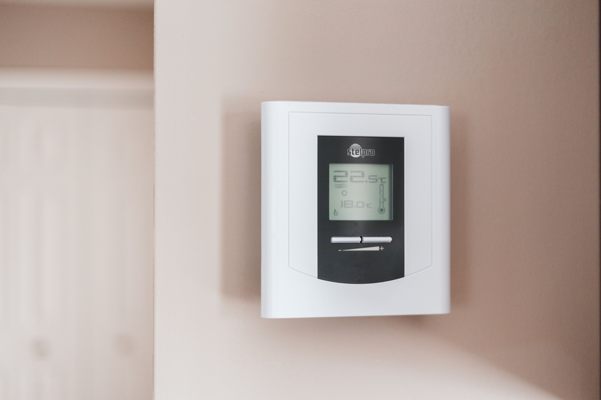
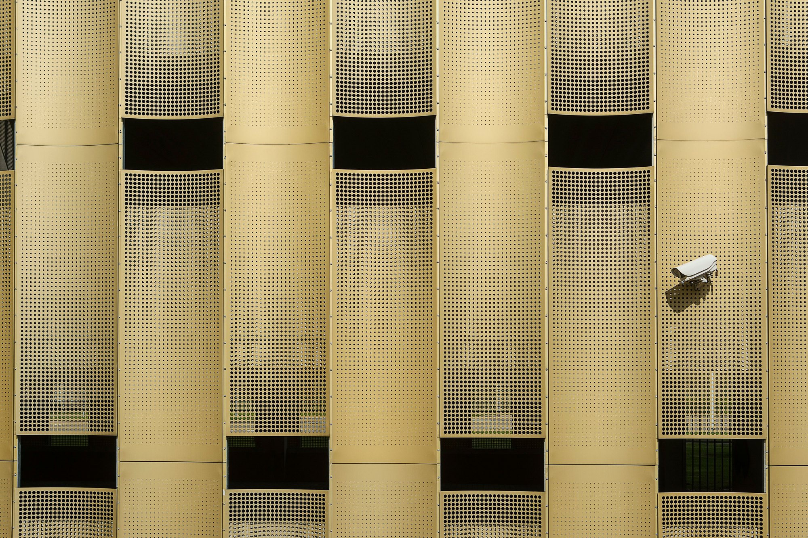

연결을 설계하는 순서
기기마다,
자신의 경로로.
카메라와 센서, 관리 장비가 같은 망을 사용해도 필요한 통신은 다릅니다. 각 기기에서 시작하는 경로를 나누어 연결의 출발점을 구분합니다.
SPN · 기기별 터널Isolate AI
같은 네트워크를 사용해도, 필요한 통신은 다릅니다. SPN은 기기별 경로와 라우팅 공간을 나누어 허용된 연결을 구성합니다.
SPN · 단말별 네트워크 분리

경로 선택
연결을 설계하는 순서
카메라와 센서, 관리 장비가 같은 망을 사용해도 필요한 통신은 다릅니다. 각 기기에서 시작하는 경로를 나누어 연결의 출발점을 구분합니다.
SPN · 기기별 터널연결을 설계하는 순서
빛 사이에 놓인 경계는 독립된 라우팅 공간을 뜻합니다. 터널과 VRF를 함께 구성해 같은 전송망 안에서도 각 기기의 통신 범위를 구분합니다.
독립 VRF · 논리적 네트워크 분리연결을 설계하는 순서
경로의 끝에는 그 기기에 필요한 서비스가 있습니다. 카메라는 관제로, 센서는 데이터 수집으로 이어지도록 허용된 연결 관계를 구성합니다.
기기 → 허용된 서비스경계를 설계하는 방법
같은 전송망을 사용하더라도 통신 관계는 기기마다 다릅니다. 먼저 필요한 목적지를 정하고, 각 경로에 논리적 경계를 구성합니다.
무엇과 통신해야 하는가.기기와 서비스의 관계를 먼저 정리합니다.
어디까지 연결되어야 하는가.터널과 독립 VRF로 경로와 통신 범위를 구분합니다.
연결 관계와 논리적 분리를 설명하는 개념도입니다.
연결의 안쪽
SPN은 단말 모듈과 게이트웨이 사이의 터널을 독립된 라우팅 공간에 연결합니다. 기존 전송망을 활용하면서 기기별 목적지와 통신 범위를 구분하는 구조입니다.
기기 앞의 단말 모듈이 해당 기기의 터널 입구를 구성합니다.
구분된 통신 경로가 기존 네트워크 위를 지납니다.
게이트웨이가 터널을 해당 라우팅 공간으로 연결합니다.
운영에 필요한 서비스로 통신 경로를 정합니다.
컨트롤러는 터널과 분리 정책을 관리합니다.
적용 환경 예시
스마트홈과 CCTV처럼 기기가 연결되는 공간에서, 필요한 통신의 범위를 먼저 살펴봅니다. 기기와 목적지, 운영 주체를 기준으로 분리 방식을 정합니다.

Smart home
월패드와 센서 등 각 세대의 기기가 통신해야 할 범위를 정합니다. 공용 인프라를 사용하더라도 세대별 기기와 필요한 서비스 사이의 연결을 구분하는 적용 환경입니다.
검토 항목: 세대별 기기 구성 · 서비스 목적지 · 관리 접속 범위
이 환경으로 상담하기
CCTV & IoT
카메라가 영상을 보내는 경로와 유지보수를 위한 관리 경로를 구분합니다. 각 기기의 목적지를 정하고, 관리자가 접속할 장비의 범위를 함께 설계하는 적용 환경입니다.
검토 항목: 카메라 위치 · 관제 목적지 · 원격 관리 방식
이 환경으로 상담하기사진은 적용 가능한 환경을 설명하기 위한 예시이며, 아라드의 실제 구축 현장이나 고객사를 의미하지 않습니다.
함께 정하는 과정
단말·서비스·관리자와 실제 통신 관계를 정리합니다.
허용할 목적지, 터널과 VRF, 관리 정책의 관계를 정합니다.
장비 배치, 운영 영향과 전환 순서를 정리합니다.
기기 추가·서비스 변경·유지보수에 필요한 관리 항목을 정합니다.
자주 묻는 질문
SPN은 단말 앞의 모듈(PGW)과 게이트웨이(SGW)를 통해 분리 경로를 구성합니다. CCTV·센서처럼 프로그램 설치가 어려운 기기도 적용 대상에 포함하며, 필요한 모듈과 연결 방식은 장비 구성에 맞춰 정합니다.
SPN은 단말별 터널과 독립된 VRF를 결합하는 방식입니다. 기존 VPN·VLAN의 목적과 구성을 함께 살펴 어느 구간에 어떤 경계가 필요한지 설계합니다.
기존 전송망 위에 터널을 구성하는 방식입니다. 적용 장비와 토폴로지, 운영 중 변경 가능한 범위를 먼저 파악해 배치와 전환 계획을 세웁니다.
감시·관리·데이터 수집과 원격 접속이 주요 대상입니다. 실시간 제어 루프와는 범위를 구분하고, 기기별 통신 방식과 운영 요구를 기준으로 적용 구간을 정합니다.
다음 연결을 함께 설계합니다
현재 망 구성과 연결할 기기·서비스를 알려주세요. 필요한 분리 단위와 적용 구간부터 살펴보겠습니다.
네트워크 분리 상담